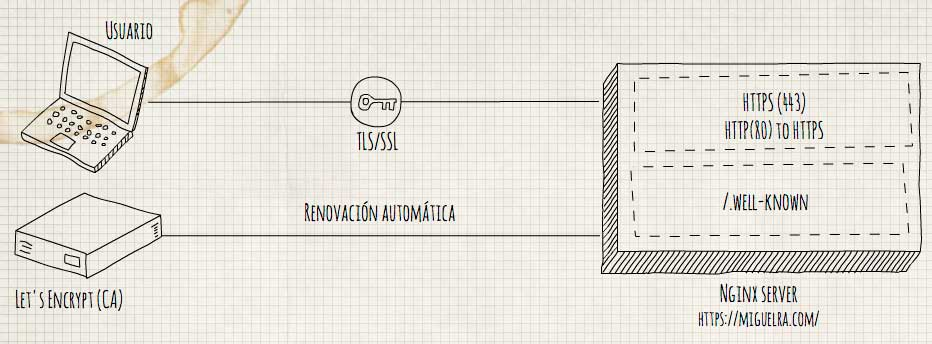

Let's Encrypt es una entidad certificadora (CA) que proporciona una manera fácil para obtener e instalar certificados TLS/SSL gratuitos. De esta manera conseguimos un internet más seguro a través del protocola HTTPS.
Para simplificar el proceso y renovar automaticamente el certificados vamos a usar cerbot.
En mi caso estoy usando Centos7 con Nginx, si estáis usando otro sistema podéis seguir la documentación oficial.

Antes que nada tenemos que tener configurado nuestro dominio, nos tenemos que asegurar que tenemos un A record apuntando a la dirección publica de nuestro servidor.
Esto es importante porque Let's Encrypt valida que nosotros seamos el propietario de dominio. Por ejemplo, si queremos obtener el certificado para miguelra.com, el dominio tiene que resolver a nuestro servidor para que el proceso de validación funcione correctamente. Nuestra configuración usará miguelra.com u www.miguelra.comcomo nombres de dominio, por lo que se requieren ambos registros DNS
Paso 1 - Instalar cliente "Cerbot Let's Encrypt"
El primer paso para usar Let's Encrypt para obtener un certificado SLL, es instalar certbot en nuestro servidor.
Lo primero es tener el repositorio EPEL (Extra Packages for Enterprise Linux) habilitado.
$ sudo yum install epel-release
Una vez habilitado, podemos instalar certbot
sudo yum install certbot
Paso 2 - Obtener el certificado
Certbot nos proporciona diversos "plugins" que se pueden usar para obtener o instalar nuestro certificado.
En nuestro caso como estamos obteniendo un certificado para un servidor en ejecución, lo recomendado es usar el plugin "webroot"
Para ello vamos a ejecutar el siguiente comando
$ certbot certonly --webroot -w /var/www/miguelra.com -d miguelra.com -d www.miguelra.com
¡Importante!
Tiene que estar accesible el directorio ./well-known/ desde nuestra url, para Let's encrypt pueda verificar nuestro sitio, antes de ejecutar el comando anterior.
Como estamos usando nginx como proxy para nuestra web hay que hacer un pequeño cambio en el archivo de configuración de nuestro servidor, en mi caso el directorio /etc/nginx/conf.d/miguelra.com.conf.
Nos quedaría de la siguiente manera:
server {
server_name miguelra.com;
return 301 $scheme://www.miguelra.com$request_uri;
}
server {
listen 80;
server_name www.miguelra.com;
location ~ /.well-known {
allow all;
root /var/www/miguelra.com/;
}
location / {
proxy_set_header X-Real-IP $remote_addr;
proxy_set_header Host $http_host;
proxy_pass http://127.0.0.1:2368;
}
}
Las lineas extra que hemos agregado son las siguientes:
location ~ /.well-known {
allow all;
root /var/www/miguelra.com/;
}
Paso 3 - Configurar nuestro Nginx
Para empezar a servir nuestra web con el ansiado HTTPS 🔒, sólo tenemos que agregar los certificados que nos acaba de generar certbot en el directorio
/etc/letsencrypt/live/miguelra.com/fullchain.pem
Volvemos a modificar nuestro archivo de configuración de nuestro Nginx:
server {
listen 80;
server_name miguelra.com www.miguelra.com;
return 301 https://www.miguelra.com$request_uri;
}
server {
listen 443 ssl;
server_name miguelra.com;
ssl_certificate /etc/letsencrypt/live/miguelra.com/fullchain.pem;
ssl_certificate_key /etc/letsencrypt/live/miguelra.com/privkey.pem;
return 301 https://www.miguelra.com$request_uri;
}
server {
listen 443 ssl;
server_name www.miguelra.com;
ssl_certificate /etc/letsencrypt/live/miguelra.com/fullchain.pem;
ssl_certificate_key /etc/letsencrypt/live/miguelra.com/privkey.pem;
ssl_protocols TLSv1 TLSv1.1 TLSv1.2;
ssl_prefer_server_ciphers on;
ssl_ciphers 'EECDH+AESGCM:EDH+AESGCM:AES256+EECDH:AES256+EDH';
location ~ /.well-known {
allow all;
root /var/www/miguelra.com/;
}
location / {
proxy_set_header X-Real-IP $remote_addr;
proxy_set_header Host $http_host;
proxy_pass http://127.0.0.1:2368;
}
}
Como vemos he configurador la redirección para que el dominio principal sea el que contiene www, forzando el esquema HTTPS
Paso 4 - Renovación automática
Por último tenemos que recordar que los certificados que nos propociona Let's Encrypt tienen una duración de 90 días, por lo que si queremos renovarlos tendríamos que ejecutar este comando:
$ certbot renew --dry-run
Podemos usar el comando anterior para ver que realmente las renovaciones están funcionando, para ahora sí, configurar una tarea programada(Cron) en nuestro servidor par que ejecute automáticamente el siguiente comando:
certbot renew --quiet
Para agregar nuestro Cron vamos a hacer uso de crontab, que simplemente es un archivo de texto donde tenemos la configuración de lo que se tiene que ejecutar en cada momento.
$ crontab -e
y agregamos las siguientes lineas, (Si alguien no está familiarizado con este editor puede ver la siguiente referencia
# Example of job definition:
# .---------------- minute (0 - 59)
# | .------------- hour (0 - 23)
# | | .---------- day of month (1 - 31)
# | | | .------- month (1 - 12) OR jan,feb,mar,apr ...
# | | | | .---- day of week (0 - 6) (Sunday=0 or 7) OR sun,mon,tue,wed,thu,fri,sat
# | | | | |
# * * * * * user-name command to be executed
30 7,21 * * * /usr/bin/certbot renew --quiet
35 7,21 * * * /usr/bin/systemctl reload nginx
He configurado para que se ejecute a las 7:30 y 21:30, la renovación del certificado ya que según la documentación oficial, lo más recomendable configuran el cron para que se ejecute dos veces al día, ya que si en algún momento falla la renovación, podamos tener el sitio el más tiempo posible con nuestro certificado.
Y reinicio el servicio de Nginx para empezar los certificados renovados.
Conclusión
Hemos visto que es muy sencillo instalar nuestro certificado SSL gratuito con Let's Encrypt.
Además a partir del 2017, Google Chrome va a marcar nuestros sitios como no seguros si hacen recolección de información.
Por lo que no nos cuesta nada instarlarlo además conseguiremos mejores puestos en los buscadores ya que es un factor que Google tiene en cuenta en el posicionamiento.